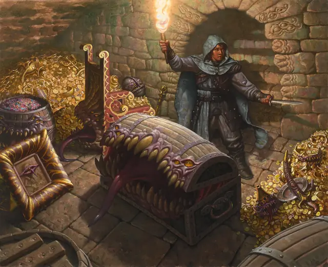

Мимик
Mimic
Среднее Чудовище, Нейтральное

Класс Защиты 12 Инициатива +3 (13)
Хиты 58 (9к8 + 18)
Скорость 20 футов
| мод | спас | ||
|---|---|---|---|
| СИЛ | 17 | +3 | +3 |
| ЛОВ | 12 | +1 | +1 |
| ТЕЛ | 15 | +2 | +2 |
| мод | спас | ||
|---|---|---|---|
| ИНТ | 5 | −3 | −3 |
| МДР | 13 | +1 | +1 |
| ХАР | 8 | −1 | −1 |
Иммунитеты Кислота; Опрокинутый
Чувства Тёмное зрение 60 футов, пассивное Восприятие 11
Языки нет
Опасность 2 (450 опыта; БВ +2)
Особенности
Приклеивание (только в форме объекта). Мимик приклеивается ко всему, что его касается. Существо Огромного размера или меньше, приклеившееся к мимику, имеет состояние Схваченный (Сл освобождения от захвата 13). Проверки характеристик для освобождения от этого захвата совершаются с Помехой.
Действия
Укус. Бросок рукопашной атаки: +5 (с Преимуществом, если цель Схвачена мимиком), досягаемость 5 фт. Попадание: 7 (1к8 + 3) Колющего урона — или 12 (2к8 + 3) Колющего урона, если цель Схвачена мимиком — плюс 4 (1к8) урона Кислотой.
Ложноножка. Бросок рукопашной атаки: +5, досягаемость 5 фт. Попадание: 7 (1к8 + 3) Дробящего урона плюс 4 (1к8) урона Кислотой. Если цель Большого размера или меньше, она получает состояние Схваченный (Сл освобождения от захвата 13). Проверки характеристик для освобождения от этого захвата совершаются с Помехой.
Бонусные действия
Перевоплощение. Мимик перевоплощается, получая внешний вид объекта Среднего или Маленького размера и сохраняя при этом свою игровую статистику, или возвращаясь в свой истинный аморфный облик. Любое снаряжение, которое он носит или несёт, не трансформируется.
Бонус мастерства +2
Среда обитания Город, Подземье
Сокровища Любые
Мимик
Оборотень, маскирующийся под невинный предмет
В своём естественном облике мимики — это не более чем блуждающие желудки: их бесформенные тела усеяны чуждыми глазами и зубами. Они могут менять цвет, фактуру и размеры, подражая неодушевлённым объектам сопоставимых габаритов. Мимики используют эти облики и для маскировки, и как приманку. Едва жертва приблизится, мимик нападает, хлеща клейкими ложноножками и зубастыми ртами. Поглотив добычу, мимики обычно перемещаются, меняют обличье и ждут следующей трапезы.
Воспользуйтесь следующим списком вещей, чтобы представить облики мимика в ваших приключениях.
| Алтарь | Кафедра | Обелиск | Скульптура |
| Бочонок | Койка | Огромный торт | Сталагмит |
| Валун | Колокол | Оружейная стойка | Стол |
| Вывеска | Котёл | Панель с рычагами | Стул |
| Гигантский самоцвет | Куча листвы | Пень | Сундук |
| Гобелен | Лестница | Дверной коврик | Топиарная фигура |
| Груда костей | Люстра | Горшок с растением | Трон |
| Дверь | Манекен | Ряд книг | Чучело |
| Зеркало | Надгробие | Саркофаг | Штурвал |